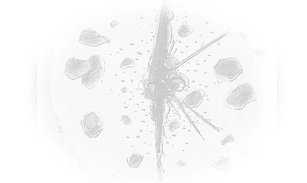
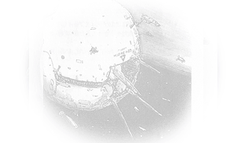
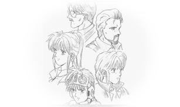

6 |
ストーリー |
 |
惑星デリアと呼ばれる総人口1800万人に 満たないその星は共和同名軍（RAF） の第26資源採掘惑星である。 様々な鉱物そしてある種の特殊ガスが採れるため、 同盟軍内部ではかなり重要な採掘源となっていた。
そのデリアからの通信が一切断たれてしまってから 2週間が経った。  2219年の連合政府制圧戦から60年が経った 現在でも任務に現役で参加している 特殊戦術要塞MIDAS1137（通称GODEYE）には 本部から惑星デリアの異変を調査 するという任務が下っていた。
以前にも同様の任務が何度もあったので さしたる問題もなく事は進んで行ったが、 48時間を隔てた今、 GODEYEのクルーは今までに体験したことのない 緊張と恐怖を味わっていた。
機内に侵入してくる」 との連絡を最後に消息を絶ったのである。  これまでにも異種生命体との遭遇はあったが、 「侵略」の意志を持った例は初めてであった。
総指令官ヒレンカーターは全艦に迎撃体制を命じ、 多目的戦闘機A-144 PHALANX投下作戦 が決定された。  PHALANX投下作戦は、任務の失敗がGODEYEの全滅を意味する事から"CLIMAX"と名付けられた。
AD2279・5・17、00：00：00、A-144と支援艇 STORKER-1を搭載した輸送艇「REIDHURCURES」 がゆっくりとデリアに降下してゆく。
目指すは、謎の液状生命体に乗っ取られてしまったシステムの中枢である。 |
 |
 |
 |